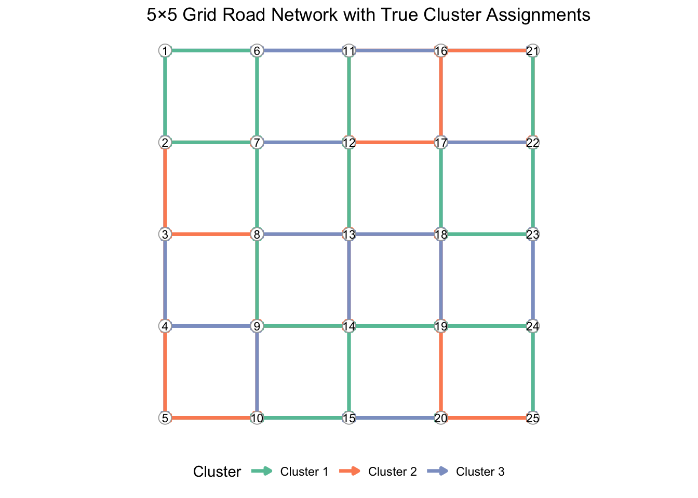
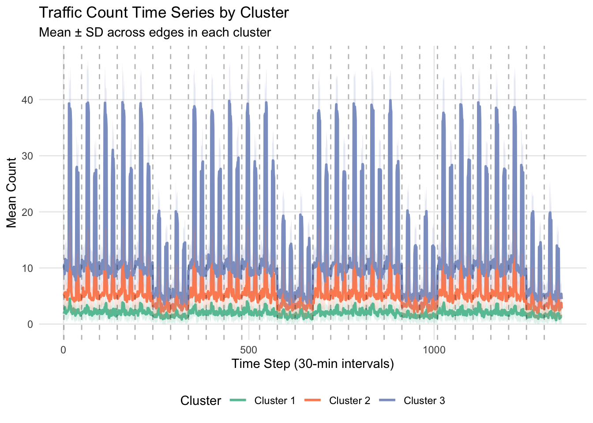
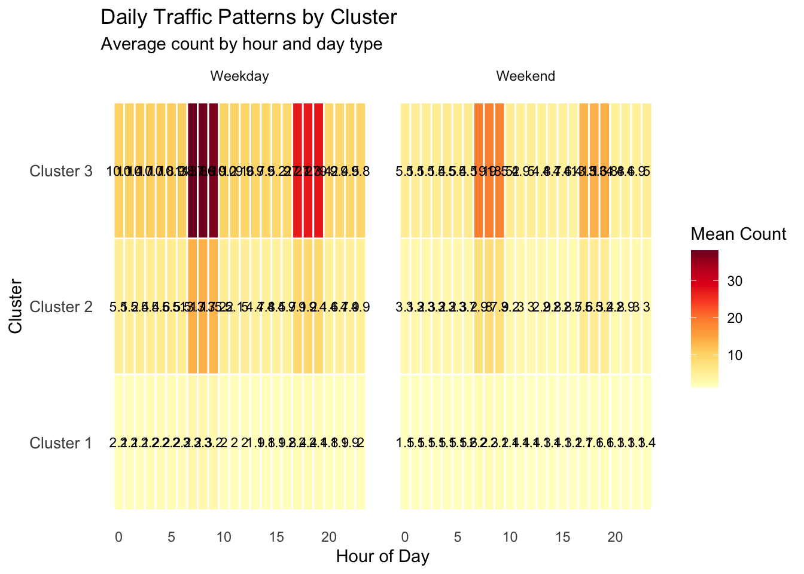

6 Simulation Study: Bayesian Dynamic Network for Traffic Data
This vignette demonstrates a complete simulation study using bdynets on synthetic traffic data from a grid road network.
6.1 1. Synthetic Data Generation
6.1.1 1.1 Create 5×5 Grid Road Network
generate_grid_network <- function(rows = 5, cols = 5) {
n_nodes <- rows * cols
## Create node coordinates
nodes <- expand.grid(row = 1:rows, col = 1:cols)
nodes$node_id <- 1:n_nodes
## Create directed edges (each node connects to adjacent nodes)
edges <- data.frame(
from = integer(),
to = integer(),
direction = character()
)
for (i in 1:rows) {
for (j in 1:cols) {
node_id <- (i - 1) * cols + j
## Right neighbor
if (j < cols) {
edges <- rbind(edges, data.frame(
from = node_id,
to = node_id + 1,
direction = "horizontal"
))
edges <- rbind(edges, data.frame(
from = node_id + 1,
to = node_id,
direction = "horizontal"
))
}
## Down neighbor
if (i < rows) {
edges <- rbind(edges, data.frame(
from = node_id,
to = node_id + cols,
direction = "vertical"
))
edges <- rbind(edges, data.frame(
from = node_id + cols,
to = node_id,
direction = "vertical"
))
}
}
}
list(
nodes = nodes,
edges = edges,
n_nodes = n_nodes,
n_edges = nrow(edges)
)
}
network <- generate_grid_network(5, 5)
cat("Network:", network$n_nodes, "nodes,", network$n_edges, "edges\n")## Network: 25 nodes, 80 edges6.1.2 1.2 Create Time Structure (4 weeks, 48 intervals/day)
## Time parameters
intervals_per_day <- 48 # 30-minute intervals
n_days <- 28 # 4 weeks
TT <- intervals_per_day * n_days # Total time steps
## Create time index
time_index <- data.frame(
t = 1:TT,
day = rep(1:n_days, each = intervals_per_day),
interval = rep(1:intervals_per_day, n_days),
hour = rep(0:23, each = 2, times = n_days),
day_of_week = rep(1:7, each = intervals_per_day, times = 4)
)
## Add peak hour indicators
time_index$is_morning_peak <- time_index$hour %in% c(7, 8, 9)
time_index$is_evening_peak <- time_index$hour %in% c(17, 18, 19)
time_index$is_weekend <- time_index$day_of_week %in% c(6, 7)6.1.3 1.3 Generate True Cluster Structure
## True number of clusters
K_true <- 3
## Define cluster characteristics (traffic patterns)
## Cluster 1: Low traffic (residential areas)
## Cluster 2: Medium traffic (suburban connectors)
## Cluster 3: High traffic (major arteries/downtown)
cluster_profiles <- list(
## Cluster 1: Low, flat pattern
list(
base = 2,
morning_peak = 1.5,
evening_peak = 1.3,
weekend_effect = 0.7
),
## Cluster 2: Medium, bimodal pattern
list(
base = 5,
morning_peak = 2.5,
evening_peak = 2.0,
weekend_effect = 0.6
),
## Cluster 3: High, strong peaks
list(
base = 10,
morning_peak = 3.5,
evening_peak = 3.0,
weekend_effect = 0.5
)
)
## Assign edges to clusters (with some spatial structure)
set.seed(20260509)
edge_cluster <- rep(1:K_true, length.out = network$n_edges)
## Add some spatial correlation
edge_cluster <- sample(edge_cluster, replace = FALSE)
## Create design matrix Fmat (TT x p)
p <- 4 # Intercept, morning peak, evening peak, weekend
Fmat <- model.matrix(
~ is_morning_peak + is_evening_peak + is_weekend,
data = time_index
)
colnames(Fmat) <- c("intercept", "morning_peak", "evening_peak", "weekend")6.1.4 1.4 Generate True Parameters
## True theta parameters (K x TT x p)
theta_true <- array(0, dim = c(K_true, TT, p))
for (k in 1:K_true) {
profile <- cluster_profiles[[k]]
## Base intercept
theta_true[k, , 1] <- log(profile$base)
## Peak effects
theta_true[k, , 2] <- log(profile$morning_peak)
theta_true[k, , 3] <- log(profile$evening_peak)
theta_true[k, , 4] <- log(profile$weekend_effect)
}
## Add small time-varying component (smooth variation)
for (k in 1:K_true) {
time_trend <- 0.1 * sin(2 * pi * (1:TT) / intervals_per_day)
theta_true[k, , 1] <- theta_true[k, , 1] + time_trend
}
## True cluster probabilities
pi_true <- c(0.4, 0.35, 0.25)
## Assign edges to clusters
Z_true <- edge_cluster6.1.5 1.5 Simulate Count Data
## Compute intensity for each edge at each time point
lambda_matrix <- matrix(0, nrow = network$n_edges, ncol = TT)
for (e in 1:network$n_edges) {
k <- Z_true[e]
eta_e <- rowSums(Fmat * theta_true[k, , ])
lambda_matrix[e, ] <- exp(eta_e)
}
## Simulate Poisson counts
Y <- matrix(0, nrow = network$n_edges, ncol = TT)
for (e in 1:network$n_edges) {
Y[e, ] <- rpois(TT, lambda_matrix[e, ])
}
cat("Data dimensions:", nrow(Y), "edges ×", ncol(Y), "time points\n")## Data dimensions: 80 edges × 1344 time points## Total observations: 107520## Mean count: 7## Max count: 586.2 2. Data Visualization
6.2.1 2.1 Network Structure
plot_network_structure <- function(network, Z_true) {
nodes <- network$nodes
edges <- network$edges
edges$cluster <- Z_true
## Node positions
node_positions <- nodes %>%
mutate(
x = col,
y = -row ## Flip y for plotting
)
## Edge data with cluster colors
edge_data <- edges %>%
left_join(node_positions, by = c("from" = "node_id")) %>%
rename(x1 = x, y1 = y) %>%
left_join(node_positions, by = c("to" = "node_id")) %>%
rename(x2 = x, y2 = y)
cluster_colors <- brewer.pal(max(Z_true), "Set2")
ggplot() +
geom_segment(
data = edge_data,
aes(x = x1, y = y1, xend = x2, yend = y2, color = factor(cluster)),
linewidth = 1.2,
arrow = arrow(length = unit(0.15, "cm"), type = "closed")
) +
geom_point(
data = node_positions,
aes(x = x, y = y),
size = 4,
color = "darkgray",
shape = 21,
fill = "white"
) +
geom_text(
data = node_positions,
aes(x = x, y = y, label = node_id),
size = 3,
color = "black"
) +
scale_color_manual(
name = "Cluster",
values = cluster_colors,
labels = paste("Cluster", 1:max(Z_true))
) +
coord_fixed() +
theme_minimal() +
theme(
axis.title = element_blank(),
axis.text = element_blank(),
axis.ticks = element_blank(),
panel.grid = element_blank(),
legend.position = "bottom"
) +
labs(title = "5×5 Grid Road Network with True Cluster Assignments")
}
p_network <- plot_network_structure(network, Z_true)
p_network
6.2.2 2.2 Time Series of Traffic Counts
plot_traffic_timeseries <- function(Y, time_index, Z_true, K) {
## Convert to long format
Y_long <- as.data.frame(Y) %>%
mutate(edge = 1:nrow(Y)) %>%
pivot_longer(
cols = -edge,
names_to = "time",
values_to = "count"
) %>%
mutate(
time = as.numeric(gsub("V", "", time)),
cluster = Z_true[edge]
) %>%
left_join(time_index, by = c("time" = "t"))
## Aggregate by cluster and time
cluster_summary <- Y_long %>%
group_by(cluster, time) %>%
summarize(
mean_count = mean(count),
sd_count = sd(count),
.groups = "drop"
)
cluster_colors <- brewer.pal(K, "Set2")
ggplot(cluster_summary, aes(x = time, y = mean_count, color = factor(cluster))) +
geom_line(linewidth = 1) +
geom_ribbon(
aes(ymin = mean_count - sd_count, ymax = mean_count + sd_count, fill = factor(cluster)),
alpha = 0.2,
color = NA
) +
scale_color_manual(
name = "Cluster",
values = cluster_colors,
labels = paste("Cluster", 1:K)
) +
scale_fill_manual(
name = "Cluster",
values = cluster_colors,
labels = paste("Cluster", 1:K),
guide = "none"
) +
geom_vline(
xintercept = seq(1, TT, by = intervals_per_day),
linetype = "dashed",
alpha = 0.3
) +
labs(
title = "Traffic Count Time Series by Cluster",
subtitle = "Mean ± SD across edges in each cluster",
x = "Time Step (30-min intervals)",
y = "Mean Count"
) +
theme_minimal() +
theme(
legend.position = "bottom",
panel.grid.minor = element_blank()
)
}
p_timeseries <- plot_traffic_timeseries(Y, time_index, Z_true, K_true)
p_timeseries
6.2.3 2.3 Daily Pattern Heatmap
plot_daily_pattern <- function(Y, time_index, Z_true, K) {
Y_long <- as.data.frame(Y) %>%
mutate(edge = 1:nrow(Y)) %>%
pivot_longer(
cols = -edge,
names_to = "time",
values_to = "count"
) %>%
mutate(
time = as.numeric(gsub("V", "", time)),
cluster = Z_true[edge]
) %>%
left_join(time_index, by = c("time" = "t"))
## Aggregate by cluster, hour, and day type
pattern_summary <- Y_long %>%
group_by(cluster, hour, is_weekend) %>%
summarize(
mean_count = mean(count),
.groups = "drop"
) %>%
mutate(
day_type = ifelse(is_weekend, "Weekend", "Weekday")
)
ggplot(pattern_summary, aes(x = hour, y = factor(cluster), fill = mean_count)) +
geom_tile(color = "white", linewidth = 0.5) +
geom_text(
aes(label = round(mean_count, 1)),
size = 3,
color = "black"
) +
facet_wrap(~ day_type, ncol = 2) +
scale_fill_gradientn(
name = "Mean Count",
colors = brewer.pal(9, "YlOrRd"),
na.value = "white"
) +
scale_y_discrete(labels = function(x) paste("Cluster", x)) +
labs(
title = "Daily Traffic Patterns by Cluster",
subtitle = "Average count by hour and day type",
x = "Hour of Day",
y = "Cluster"
) +
theme_minimal() +
theme(
legend.position = "right",
panel.grid = element_blank(),
axis.text.y = element_text(size = 10)
)
}
p_heatmap <- plot_daily_pattern(Y, time_index, Z_true, K_true)
p_heatmap
6.3 3. Run MCMC
## MCMC settings
n_iter <- 800
burn <- 400
K_fit <- K_true
## Prior settings
alpha_pi <- rep(1, K_fit)
m0_fit <- c(log(mean(Y) + 0.1), 0, 0, 0)
C0_fit <- diag(4) * 5
G_fit <- diag(4)
W_fit <- diag(4) * 0.01
r_tune <- (max(Y) + sqrt(max(Y)) * 3) * 50
cat("Running MCMC with", n_iter, "iterations...\n")
## Run Gibbs sampler
mcmc_result <- bdynets::gibbs_sampler(
Y = Y,
Fmat = Fmat,
K = K_fit,
n_iter = n_iter,
burn = burn,
alpha_pi = alpha_pi,
m0 = m0_fit,
C0 = C0_fit,
G = G_fit,
W = W_fit,
r_tune = r_tune,
Z_true = Z_true,
relabel_freq = 1,
print_freq = 100,
store_theta = TRUE,
seed = 20260509
)
cat("MCMC completed in", round(mcmc_result$settings$total_time, 2), "seconds\n")6.4 4. MCMC Diagnostics
6.4.1 4.1 Trace Plots
plot_trace_diagnostics <- function(mcmc_result) {
burn <- mcmc_result$settings$burn
keep_idx <- seq(burn + 1, mcmc_result$settings$n_iter)
K <- mcmc_result$settings$K
## Cluster probabilities
pi_long <- as.data.frame(mcmc_result$pi[keep_idx, ]) %>%
mutate(iteration = keep_idx) %>%
pivot_longer(
cols = -iteration,
names_to = "cluster",
values_to = "value"
) %>%
mutate(cluster = gsub("V", "", cluster))
cluster_colors <- brewer.pal(K, "Set2")
p_pi <- ggplot(pi_long, aes(x = iteration, y = value, color = cluster)) +
geom_line(alpha = 0.7, linewidth = 0.8) +
scale_color_manual(
name = "Cluster",
values = cluster_colors,
labels = paste("Cluster", 1:K)
) +
labs(
title = "Trace Plot: Cluster Probabilities (π)",
x = "Iteration",
y = "Probability"
) +
theme_minimal() +
theme(
legend.position = "bottom",
panel.grid.minor = element_blank()
)
## Cluster sizes
size_long <- as.data.frame(mcmc_result$size[keep_idx, ]) %>%
mutate(iteration = keep_idx) %>%
pivot_longer(
cols = -iteration,
names_to = "cluster",
values_to = "value"
) %>%
mutate(cluster = gsub("V", "", cluster))
p_size <- ggplot(size_long, aes(x = iteration, y = value, color = cluster)) +
geom_line(alpha = 0.7, linewidth = 0.8) +
scale_color_manual(
name = "Cluster",
values = cluster_colors,
labels = paste("Cluster", 1:K),
guide = "none"
) +
labs(
title = "Trace Plot: Cluster Sizes",
x = "Iteration",
y = "Number of Edges"
) +
theme_minimal() +
theme(
legend.position = "none",
panel.grid.minor = element_blank()
)
p_pi / p_size + plot_layout(heights = c(1, 1))
}
p_trace <- plot_trace_diagnostics(mcmc_result)
p_trace6.4.2 4.2 Convergence Diagnostics (ARI & Accuracy)
plot_convergence_diagnostics <- function(mcmc_result) {
burn <- mcmc_result$settings$burn
keep_idx <- seq(burn + 1, mcmc_result$settings$n_iter)
diagnostics <- data.frame(
iteration = keep_idx,
ARI = mcmc_result$ari[keep_idx],
Accuracy = mcmc_result$acc[keep_idx]
) %>%
pivot_longer(
cols = c(ARI, Accuracy),
names_to = "metric",
values_to = "value"
)
ggplot(diagnostics, aes(x = iteration, y = value, color = metric)) +
geom_line(linewidth = 1.2) +
geom_hline(
data = diagnostics %>% group_by(metric) %>% summarize(mean_val = mean(value)),
aes(yintercept = mean_val, color = metric),
linetype = "dashed",
linewidth = 1
) +
scale_color_manual(
name = "Metric",
values = c("ARI" = "#2C7BB6", "Accuracy" = "#D7191C"),
labels = c("ARI" = "Adjusted Rand Index", "Accuracy" = "Best Label Accuracy")
) +
labs(
title = "MCMC Convergence: Clustering Accuracy",
subtitle = paste("Post burn-in mean ARI:", round(mean(mcmc_result$ari[keep_idx]), 3),
"| Mean Accuracy:", round(mean(mcmc_result$acc[keep_idx]), 3)),
x = "Iteration",
y = "Value"
) +
theme_minimal() +
theme(
legend.position = "bottom",
panel.grid.minor = element_blank()
)
}
p_convergence <- plot_convergence_diagnostics(mcmc_result)
p_convergence6.4.3 4.3 Posterior Distributions
plot_posterior_distributions <- function(mcmc_result) {
burn <- mcmc_result$settings$burn
keep_idx <- seq(burn + 1, mcmc_result$settings$n_iter)
K <- mcmc_result$settings$K
## Posterior of cluster probabilities
pi_long <- as.data.frame(mcmc_result$pi[keep_idx, ]) %>%
pivot_longer(
cols = everything(),
names_to = "cluster",
values_to = "value"
) %>%
mutate(cluster = gsub("V", "", cluster))
cluster_colors <- brewer.pal(K, "Set2")
ggplot(pi_long, aes(x = value, fill = cluster)) +
geom_density(alpha = 0.6, adjust = 1.2) +
scale_fill_manual(
name = "Cluster",
values = cluster_colors,
labels = paste("Cluster", 1:K)
) +
labs(
title = "Posterior Distributions: Cluster Probabilities",
x = "Probability",
y = "Density"
) +
theme_minimal() +
theme(
legend.position = "bottom",
panel.grid.minor = element_blank()
)
}
p_posterior <- plot_posterior_distributions(mcmc_result)
p_posterior6.5 5. Estimation Accuracy
6.5.1 5.1 Cluster Recovery
plot_cluster_recovery <- function(mcmc_result, Z_true, K) {
burn <- mcmc_result$settings$burn
keep_idx <- seq(burn + 1, mcmc_result$settings$n_iter)
## Get posterior mode of Z for each edge
Z_post <- mcmc_result$Z[keep_idx, ]
Z_hat <- apply(Z_post, 2, function(x) {
which.max(tabulate(x, nbins = K))
})
## Confusion matrix
conf_matrix <- table(True = Z_true, Estimated = Z_hat)
conf_long <- as.data.frame(conf_matrix) %>%
filter(Freq > 0)
cluster_colors <- brewer.pal(K, "Set2")
ggplot(conf_long, aes(x = Estimated, y = True, fill = Freq)) +
geom_tile(color = "white", linewidth = 1) +
geom_text(
aes(label = Freq),
size = 6,
color = "black"
) +
scale_fill_gradientn(
name = "Count",
colors = brewer.pal(9, "Blues"),
na.value = "white"
) +
scale_x_discrete(
name = "Estimated Cluster",
labels = paste("Cluster", 1:K)
) +
scale_y_discrete(
name = "True Cluster",
labels = paste("Cluster", 1:K)
) +
labs(
title = "Cluster Recovery: Confusion Matrix",
subtitle = paste("ARI =", round(adj_rand_index(Z_true, Z_hat), 3)),
x = "Estimated Cluster",
y = "True Cluster"
) +
coord_fixed() +
theme_minimal() +
theme(
panel.grid = element_blank(),
axis.text = element_text(size = 11)
)
}
p_recovery <- plot_cluster_recovery(mcmc_result, Z_true, K_true)
p_recovery6.5.2 5.2 Intensity Estimation
plot_intensity_estimation <- function(mcmc_result, Y, Fmat, Z_true, K, theta_true = NULL) {
burn <- mcmc_result$settings$burn
keep_idx <- seq(burn + 1, mcmc_result$settings$n_iter)
## Posterior mean lambda (dimensions: K × TT)
lambda_mean <- apply(mcmc_result$lambda[keep_idx, , ], c(2, 3), mean)
## True lambda (compute from theta_true)
TT <- ncol(Y)
n_edges <- nrow(Y)
lambda_true <- matrix(0, nrow = n_edges, ncol = TT)
lambda_est <- matrix(0, nrow = n_edges, ncol = TT)
if (!is.null(theta_true)) {
## Compute true lambda for each edge
for (e in 1:n_edges) {
k <- Z_true[e]
eta_e <- rowSums(Fmat * theta_true[k, , ])
lambda_true[e, ] <- exp(eta_e)
## Estimated lambda uses the cluster's posterior mean
lambda_est[e, ] <- lambda_mean[k, ]
}
} else {
## If theta_true not provided, use posterior mean as proxy
for (e in 1:n_edges) {
k <- Z_true[e]
lambda_est[e, ] <- lambda_mean[k, ]
}
lambda_true <- lambda_est
warning("theta_true not provided. Using posterior mean for comparison.")
}
## Compare for a few representative edges
edge_sample <- sample(1:n_edges, min(6, n_edges))
comparison_data <- data.frame(
edge = rep(edge_sample, each = TT * 2),
time = rep(1:TT, length(edge_sample) * 2),
type = rep(c("True", "Estimated"), each = TT * length(edge_sample)),
count = c(
as.vector(lambda_true[edge_sample, ]),
as.vector(lambda_est[edge_sample, ])
)
)
ggplot(comparison_data, aes(x = time, y = count, color = type)) +
geom_line(linewidth = 0.8) +
facet_wrap(~ edge, ncol = 3, labeller = labeller(edge = function(x) paste("Edge", x))) +
scale_color_manual(
name = "",
values = c("True" = "#2C7BB6", "Estimated" = "#D7191C"),
labels = c("True Intensity", "Posterior Mean")
) +
labs(
title = "Intensity Estimation: True vs Posterior Mean",
x = "Time Step",
y = "Intensity (λ)"
) +
theme_minimal() +
theme(
legend.position = "bottom",
panel.grid.minor = element_blank(),
strip.text = element_text(size = 9)
)
}
## In your simulation script, after running MCMC:
p_intensity <- plot_intensity_estimation(
mcmc_result,
Y,
Fmat,
Z_true,
K_true,
theta_true = theta_true ## Pass the true parameters from data generation
)
p_intensity6.6 6. Combined Visualization
## Combine all diagnostic plots
(p_network | p_timeseries) /
(p_trace) /
(p_convergence | p_recovery) /
(p_posterior | p_heatmap) +
plot_layout(guides = "collect") &
theme(legend.position = "bottom")6.7 7. Summary Statistics
## Print summary
summary(mcmc_result)
## Key metrics
burn <- mcmc_result$settings$burn
keep_idx <- seq(burn + 1, mcmc_result$settings$n_iter)
cat("\n=== Estimation Accuracy ===\n")
cat("Adjusted Rand Index (mean):", round(mean(mcmc_result$ari[keep_idx]), 4), "\n")
cat("Best Label Accuracy (mean):", round(mean(mcmc_result$acc[keep_idx]), 4), "\n")
cat("\n=== Posterior Cluster Probabilities ===\n")
pi_mean <- colMeans(mcmc_result$pi[keep_idx, ])
print(round(pi_mean, 4))
cat("\n=== True Cluster Probabilities ===\n")
print(round(pi_true, 4))
cat("\n=== Computational Performance ===\n")
cat("Total iterations:", mcmc_result$settings$n_iter, "\n")
cat("Burn-in:", mcmc_result$settings$burn, "\n")
cat("Runtime:", round(mcmc_result$settings$total_time, 2), "seconds\n")
cat("Time per iteration:", round(mcmc_result$settings$total_time / mcmc_result$settings$n_iter, 3), "seconds\n")6.8 8. Session Information
## R version 4.4.0 (2024-04-24)
## Platform: aarch64-apple-darwin20
## Running under: macOS 26.3.1
##
## Matrix products: default
## BLAS: /System/Library/Frameworks/Accelerate.framework/Versions/A/Frameworks/vecLib.framework/Versions/A/libBLAS.dylib
## LAPACK: /Library/Frameworks/R.framework/Versions/4.4-arm64/Resources/lib/libRlapack.dylib; LAPACK version 3.12.0
##
## locale:
## [1] en_US.UTF-8/en_US.UTF-8/en_US.UTF-8/C/en_US.UTF-8/en_US.UTF-8
##
## time zone: Asia/Shanghai
## tzcode source: internal
##
## attached base packages:
## [1] parallel stats graphics grDevices utils datasets methods
## [8] base
##
## other attached packages:
## [1] RColorBrewer_1.1-3 patchwork_1.3.2 bdynets_0.0.0.9000
## [4] tmvnsim_1.0-2 Rfast_2.1.5.2 RcppParallel_5.1.11-2
## [7] zigg_0.0.2 Rcpp_1.1.1 pgdraw_1.1
## [10] mvnfast_0.2.8 matrixsampling_2.0.0 matrixNormal_0.1.2
## [13] MASS_7.3-61 lubridate_1.9.3 forcats_1.0.0
## [16] stringr_1.5.1 dplyr_1.1.4 purrr_1.0.2
## [19] readr_2.1.5 tidyr_1.3.1 tibble_3.2.1
## [22] ggplot2_4.0.2 tidyverse_2.0.0
##
## loaded via a namespace (and not attached):
## [1] gtable_0.3.6 xfun_0.48 bslib_0.8.0 tzdb_0.4.0
## [5] vctrs_0.7.2 tools_4.4.0 generics_0.1.3 highr_0.11
## [9] pkgconfig_2.0.3 S7_0.2.1 desc_1.4.3 lifecycle_1.0.5
## [13] compiler_4.4.0 farver_2.1.2 litr_0.9.2 htmltools_0.5.8.1
## [17] usethis_3.0.0 sass_0.4.9 yaml_2.3.10 pillar_1.10.1
## [21] jquerylib_0.1.4 whisker_0.4.1 cachem_1.1.0 tidyselect_1.2.1
## [25] digest_0.6.37 mvtnorm_1.3-6 stringi_1.8.4 bookdown_0.40
## [29] labeling_0.4.3 rprojroot_2.0.4 fastmap_1.2.0 grid_4.4.0
## [33] cli_3.6.5 magrittr_2.0.4 withr_3.0.2 scales_1.4.0
## [37] keep_1.0 timechange_0.3.0 roxygen2_7.3.2 rmarkdown_2.28
## [41] hms_1.1.3 evaluate_1.0.1 knitr_1.48 rlang_1.1.7
## [45] glue_1.8.0 xml2_1.3.6 rstudioapi_0.16.0 jsonlite_1.8.9
## [49] R6_2.6.1 fs_1.6.4